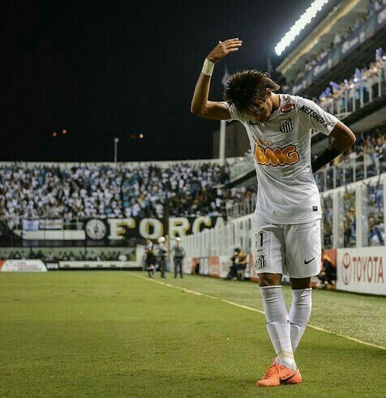
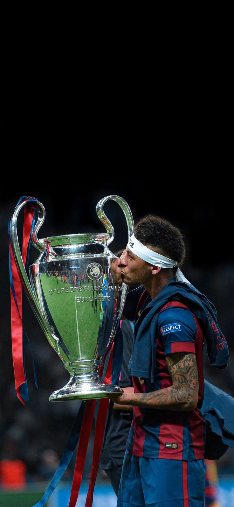
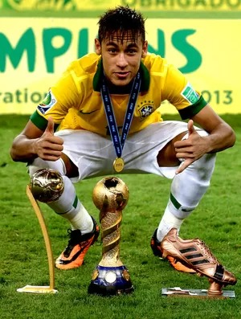
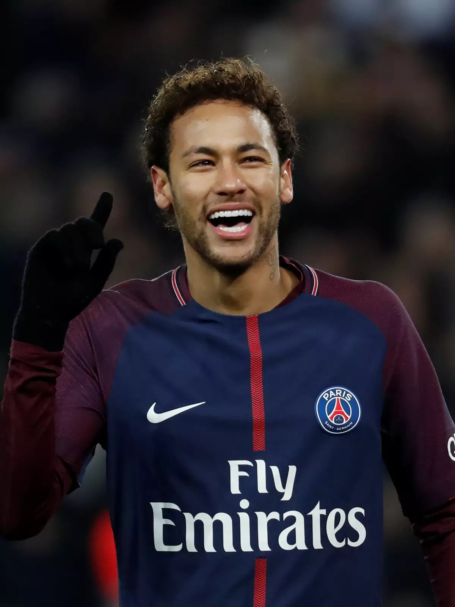

-Meu Ídolo-
Neymar Jr.
Neymar é meu maior ídolo e uma pessoa que me inspira desde criança.
Comecei a gostar de futebol por volta de 2010, quando assistia aos jogos dele pelo Santos.
Naquela época, me apaixonei pelo futebol e passei a acompanhar cada vez mais o Neymar.
Como toda criança que tinha o Neymar como ídolo, eu também usava o famoso “moicano do Ney”, a gola da camisa levantada e até o dilatador nasal, tentando imitar meu jogador favorito.
Sou santista e tenho muito orgulho de ter crescido acompanhando o Neymar no Santos e vendo de perto uma das maiores referências da minha infância.

Essa foto representa uma comemoração marcante do Neymar. Após marcar o gol, ele fez o famoso
gesto “Prazer, Neymar!”, uma resposta ao técnico que havia dito que não sabia quem ele era.
A comemoração acabou ficando conhecida e virou um momento marcante da carreira do jogador.

Nessa foto, Neymar aparece beijando a taça da Champions League pelo Barcelona, um dos maiores
títulos de sua carreira e uma conquista que marcou sua trajetória no futebol mundial.

Aqui, Neymar aparece comemorando a conquista da Copa das Confederações de 2013 pela Seleção Brasileira, ao lado
dos prêmios individuais que recebeu durante a competição. Foi um dos grandes momentos de sua carreira com a camisa da Seleção.

Sua chegada ao PSG foi simplesmente avassaladora. Neymar chegou como uma das maiores estrelas do futebol mundial
e rapidamente mostrou todo o seu talento, protagonizando grandes momentos e deixando sua marca no clube francês.

Em 2025, tive a oportunidade de ver o Neymar jogar de perto pela primeira vez, na partida entre Mirassol e Santos, em Mirassol,
pelo Campeonato Brasileiro. Foi um momento muito especial para mim, principalmente por finalmente ver em campo o jogador que acompanho desde criança.
Saiba mais sobre Neymar:
https://pt.wikipedia.org/wiki/Neymar